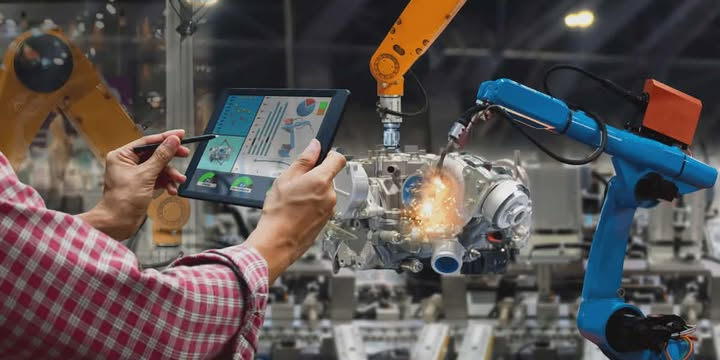
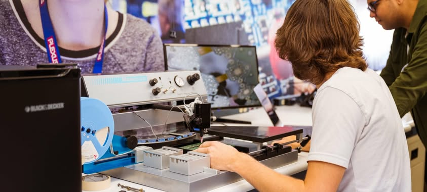

Technical-Professional Track
The Technical-Professional (TechPro) Track prepares students for technology-driven and professional careers by combining applied science, advanced technical skills, and real-world industry standards. This track is ideal for learners who plan to pursue technology-focused college programs, professional certifications, or careers in engineering support, IT, applied sciences, and modern industries.
What You Will Study?
▶- Applied Technology: Use modern tools, systems, and digital technologies.
- Advanced Mathematics: Learn applied math for engineering and technology.
- Computer & Information Systems: Study hardware, software, and data systems.
- Engineering Fundamentals: Understand design, systems, and technical processes.
- Scientific Applications: Apply science concepts in technical environments.
- Technical Research: Conduct applied research and documentation.
- Professional Communication: Technical writing and reporting skills.
- Technology Ethics & Safety: Industry standards and professional conduct.
- Innovation: Solve real-world problems using technology.
- Career Preparation: Readiness for certifications and college pathways.
Key Skills You Will Develop
▶- Technical Proficiency: Ability to use advanced tools, systems, and technologies effectively.
- Analytical Thinking: Evaluate technical problems and develop data-driven solutions.
- Applied Problem-Solving: Address real-world technical challenges using logic and innovation.
- Research Skills: Conduct technical investigations and present findings professionally.
- Digital Literacy: Use digital platforms, software, and emerging technologies confidently.
- Professional Work Ethics: Practice responsibility, accuracy, and accountability in technical tasks.
- Project Management: Plan, organize, and execute technical projects efficiently.
- Collaboration: Work effectively with teams in technical and professional environments.
- Adaptability: Keep up with evolving technologies and industry demands.
- College & Career Readiness: Be prepared for technology-focused degree programs and professional pathways.
Jobs and Careers
▶
Engineering Technology:Engineering Technology (ET) is the practical application of scientific and engineering principles to design, build, maintain, and operate real-world systems, focusing on hands-on implementation rather than deep theory, bridging the gap between abstract engineering concepts and tangible solutions in industries like manufacturing, production, and design.
Information Technology: Information technology (IT) refers to the use of computers, storage, networking, and other physical devices, infrastructure, and processes to create, process, store, secure, and exchange all forms of electronic data.
Computer Science:Computer science is the study of computers, computational systems, and information processing, encompassing both theoretical foundations (algorithms, data structures) and practical applications (software/hardware design, AI). It focuses on how data is represented, manipulated, and stored, driving innovation in fields like cybersecurity, graphics, and machine learning.

Computer Engineering: Computer Engineering (CE) blends electrical engineering and computer science to design, build, and maintain computer hardware (like processors, chips, circuit boards) and the software that runs them, bridging the gap between physical components and digital functionality, crucial for everything from smartphones and robotics to embedded systems in cars and appliances.
Software Engineering: Software engineering is the systematic, disciplined, and quantifiable approach to the development, operation, and maintenance of software. It applies engineering principles and computer science to create reliable, efficient, and scalable software systems, moving beyond just coding to include requirements analysis, design, testing, and project management.

Electronics Engineering Technology: Electronics Engineering Technology (EET) is a hands-on field focusing on the application of electrical and electronic principles to design, test, troubleshoot, and repair systems like circuits, robotics, and communication devices. Programs (often Associate or Bachelor's) prepare technologists for roles in manufacturing, automation, and technical support.
Electrical Engineering Technology:Electrical Engineering Technology (EET) applies electrical/electronics principles to design, install, maintain, and troubleshoot electrical systems, focusing more on hands-on implementation and applied design than theoretical math in traditional Electrical Engineering (EE), covering areas like power, electronics, control systems, and telecommunications, with graduates working as technicians, technologists, or engineers in various industries.
Mechanical Engineering Technology:Mechanical Engineering Technology (MET) focuses on applying mechanical engineering principles for practical product development, using hands-on skills like CAD, CNC machining, and prototyping to build, test, and maintain machinery and systems, differing from pure Mechanical Engineering (ME) by emphasizing implementation and less complex theory (like calculus), though an ABET-accredited MET degree allows similar professional paths.
Automation & Robotics Technology:Automation and robotics technology involves using programmable machines (robots) and control systems to perform tasks automatically, reducing human intervention, improving precision, and increasing efficiency in industries like manufacturing, logistics, and healthcare. It integrates artificial intelligence, sensors, and software, serving as a core component of Industry 4.0 for smart factories.
Data Science:Data science is an interdisciplinary field combining statistics, AI, machine learning, and computer science to analyze large, complex datasets for actionable insights. It enables data-driven decision-making, predictive modeling, and pattern recognition across industries, using tools like Python, R, and SQL. Key roles include data scientists, analysts, and engineers, with applications spanning finance, healthcare, and marketing.